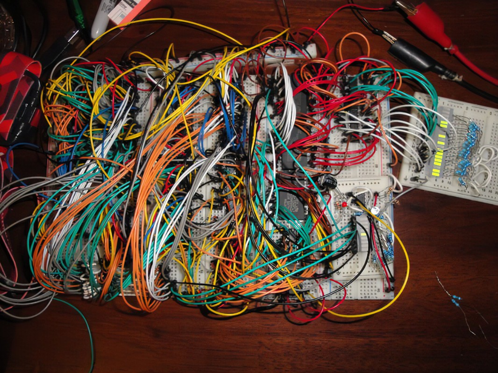
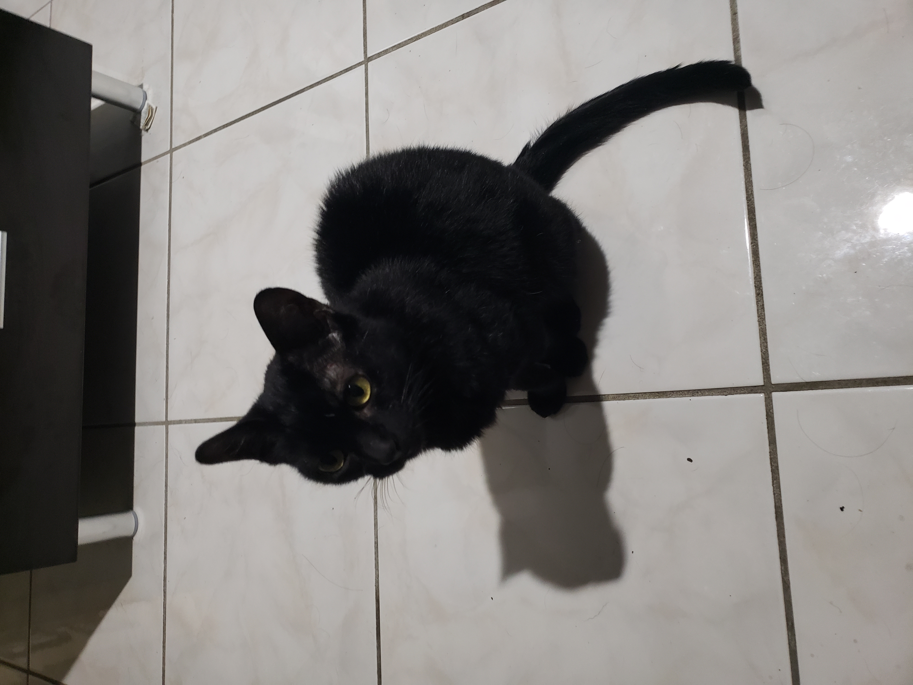

I have always been fascinated by technology, so much so that I obtained a CompTIA A+ certification and fixed desktop computers for a couple of years. From fixing network printers to reinstalling operating systems for an entire school campus because of malware, it was a valuable experience.
I had some friends who were computer engineering majors show me some of the projects they were working on. Through this, I learned about logic chips, breadboards, microprocessors, systems design, and more. One of my friends gave me a spare breadboard and microprocessor, and soon enough, I was building a clock and programming it with assembly. This sparked my interest in becoming a developer.

Outside of school and work, I enjoy cycling, video games, and watching TV shows.
I also enjoy spending time with my cat. Say hi to Minnie!
